Find the rotational and reflection symmetries of a square, a regular pentagon and a regular hexagon.
Formula / ideaA regular n-gon has rotational symmetry of order n and n lines of symmetry
Step 1
Square: looks the same after turns of 90°, 180°, 270°, 360°, so rotational order 4; 4 lines of symmetry (2 diagonals + 2 lines joining midpoints of opposite sides)
Step 2
Regular pentagon: turns of 72°, 144°, 216°, 288°, 360°, so order 5; 5 lines of symmetry
Step 3
Regular hexagon: turns of 60°, 120°, …, 360°, so order 6; 6 lines of symmetry
AnswerSquare 4 and 4, pentagon 5 and 5, hexagon 6 and 6. A circle has infinitely many of each.
2
What are the longest and the smallest chords of a circle of radius 5 units?
Formula / ideaChord length = 2√(r² − d²), where d is its distance from the centre
Step 1
The length is greatest when d = 0, that is when the chord passes through the centre: 2 × 5 = 10 units
Step 2
As the chord moves away from the centre, its length keeps getting smaller and comes as close to 0 as we like, but a chord of length 0 is only a point
AnswerLongest chord = diameter = 10 units; there is no smallest chord
3
What is the locus of points equidistant from two given points A and B?
Step 1
Let M be the midpoint of AB and P any point on the perpendicular bisector of AB
Step 2
In △PMA and △PMB: AM = BM, ∠PMA = ∠PMB = 90°, PM common, so △PMA ≅ △PMB (SAS) and PA = PB
Step 3
Conversely, any point P with PA = PB makes △PAB isosceles, and the line from P to M is perpendicular to AB, so P is on the perpendicular bisector
AnswerThe locus is the perpendicular bisector of AB
Think and Reflect (page 95)
5 questions
1
How many circles pass through two given points on a plane?
Step 1
The centre must be equidistant from A and B, so it lies on the perpendicular bisector of AB
Step 2
Every point of this line can be a centre, and a line has infinitely many points
AnswerInfinitely many circles
2
Can circles of all possible radii pass through A and B? What are the smallest and largest radii?
Step 1
The smallest circle has AB as a diameter, so its radius = ½ AB. Any other circle has AB as a shorter chord, so a bigger radius
Step 2
As the centre moves far along the perpendicular bisector, the radius grows without limit
AnswerOnly radii ≥ ½ AB; smallest = ½ AB; no largest
3
As the centre moves away from AB along the perpendicular bisector, do the radii increase or decrease?
Step 1
If the centre O is x units from M (midpoint of AB), then radius OA = √(x² + (½AB)²)
Step 2
This grows as x grows
AnswerThe radii increase
4
Does the circle look more curved or less curved as its radius increases?
Step 1
A larger radius gives a flatter arc near A and B
AnswerLess curved (like the horizon of the Earth, which looks almost straight)
5
How many squares have A and B on their boundary? How many have A and B as corners?
Step 1
On the boundary: A and B can lie anywhere on the sides of squares of many sizes and turns: infinitely many
Step 2
As corners: AB can be a side (2 squares, one on each side of AB) or a diagonal (1 square)
AnswerInfinitely many on the boundary; exactly 3 with A and B as corners
Exercise Set 5.1
4 questions
1
Draw △ABC with AB = 5 cm, ∠A = 70°, ∠B = 60°. Draw its circumcircle. Is the centre inside or outside the triangle?
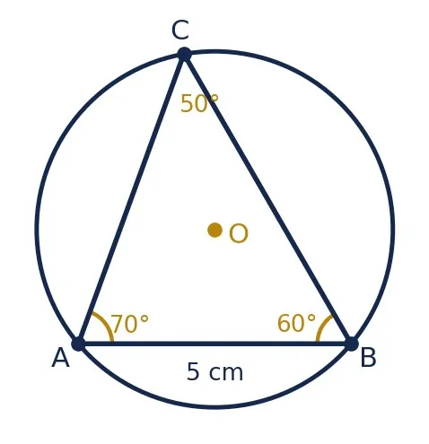
All angles acute: O is inside
Step 1
∠C = 180° − (70° + 60°) = 50°
Step 2
Construction: draw AB = 5 cm; draw rays at 70° from A and 60° from B to meet at C
Step 3
Draw the perpendicular bisectors of any two sides; they meet at O. With centre O and radius OA draw the circle
Step 4
All three angles (70°, 60°, 50°) are less than 90°, so the triangle is acute
AnswerThe circumcentre lies inside the triangle
2
Draw △ABC with AB = 5 cm, ∠A = 100°, AC = 4 cm. Draw its circumcircle. Is the centre inside or outside?
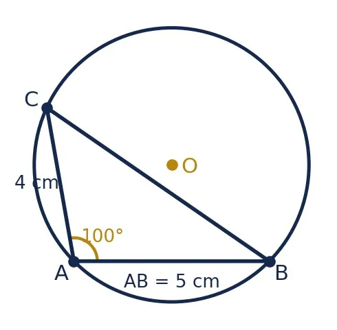
∠A is obtuse: O is outside
Step 1
Draw AB = 5 cm, an angle of 100° at A and mark AC = 4 cm. Join BC
Step 2
Draw the perpendicular bisectors of AB and AC; they meet at O. Draw the circle with radius OA
Step 3
∠A = 100° > 90°, so the triangle is obtuse-angled
AnswerThe circumcentre lies outside, beyond side BC (opposite the obtuse angle)
3
Draw △ABC with AB = 6 cm, BC = 7 cm, CA = 7 cm. Find its circumcentre O and measure OA, OB and OC.
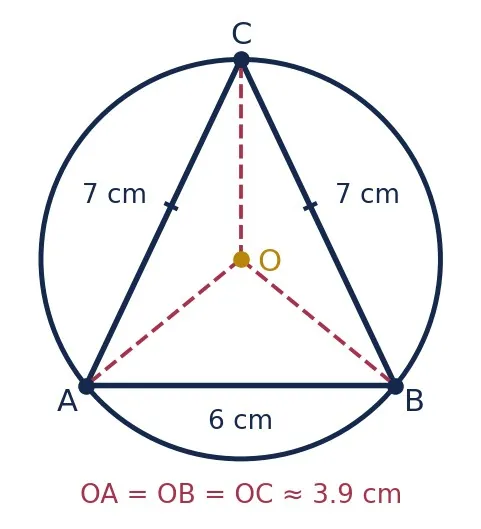
OA = OB = OC (radii)
Step 1
Construct the triangle, then the perpendicular bisectors of two sides; they meet at O
Step 2
OA, OB, OC are all radii of the circumcircle, so they must be equal
Step 3
Check by calculation: height from C = √(7² − 3²) = √40 = 2√10, area = ½ × 6 × 2√10 = 6√10 cm²
Step 4
R = abc4 × area = 6 × 7 × 724√10 = 29475.9 ≈ 3.87 cm
AnswerOA = OB = OC ≈ 3.9 cm; O lies inside (the triangle is acute)
4
What is the least possible radius of a circle passing through two points A and B?
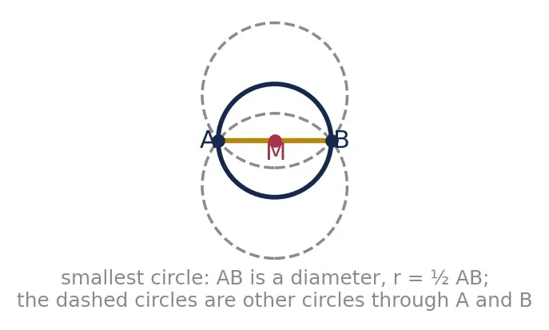
Smallest circle: AB is a diameter
Step 1
For any circle through A and B, AB is a chord
Step 2
A chord is never longer than a diameter: AB ≤ 2r, so r ≥ ½ AB
Step 3
r = ½ AB happens when AB itself is a diameter
AnswerLeast radius = ½ AB
Think, Draw and Infer (page 98)
2 questions
1
A, B, C lie on a line. Is there a point P with PA = PB = PC? Can a circle pass through three collinear points? Can a line cut a circle in three points?
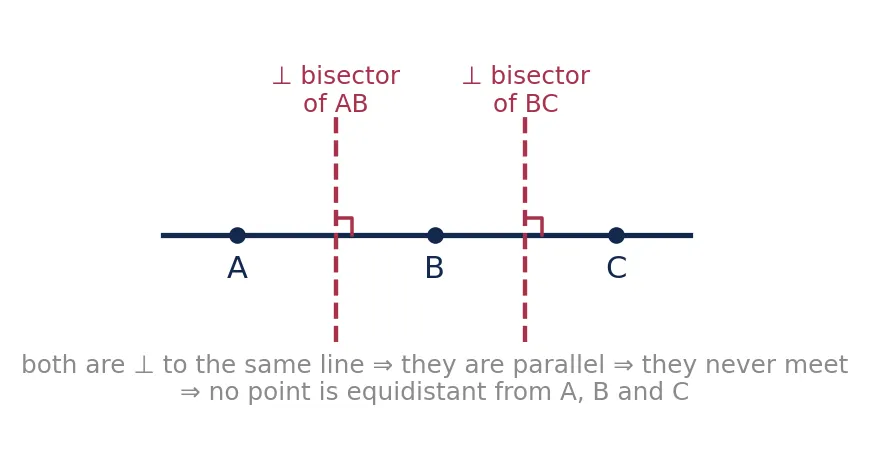
Both bisectors are perpendicular to the same line
Step 1
PA = PB means P is on the perpendicular bisector of AB; PB = PC means P is on the perpendicular bisector of BC
Step 2
Both bisectors are perpendicular to the same line ABC, so they are parallel and never meet
Step 3
So no such P exists, and no circle (which needs such a centre) can pass through three collinear points
Step 4
If a line met a circle in three points, those three collinear points would be on a circle, which is impossible
AnswerNo such point; no circle through three collinear points; a line meets a circle in at most 2 points
2
Can other triangles congruent to △ABC have the same circumcircle?
Step 1
Rotate △ABC about the centre O by any angle: the circle maps onto itself and the new triangle is congruent with all vertices on the circle
Step 2
Reflecting in any diameter also works
AnswerYes, infinitely many
Exercise Set 5.2
2 questions
1
Show that the triangle formed by a chord and the centre of a circle is isosceles.
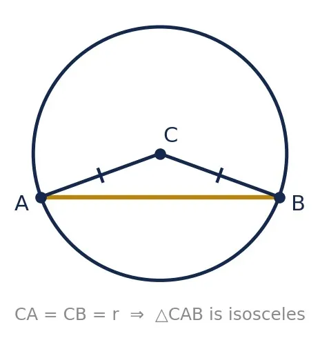
CA = CB = r
GivenChord AB, centre C
Step 1
CA and CB are radii of the same circle, so CA = CB
Step 2
A triangle with two equal sides is isosceles
Answer△CAB is isosceles (and ∠CAB = ∠CBA). Proved.
2
Show that two such isosceles triangles on equal chords are congruent.
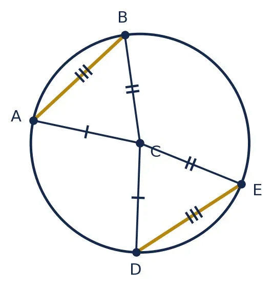
Equal chords give congruent triangles
GivenChords AB = DE, centre C
Step 1
CA = CD (radii)
Step 2
CB = CE (radii)
Step 3
AB = DE (given)
Step 4
So △CAB ≅ △CDE by SSS
Answer△CAB ≅ △CDE (this is why equal chords subtend equal angles at the centre)
Exercise Set 5.3
3 questions
1
Why is the converse of Theorem 4 true: the perpendicular from the centre to a chord bisects it?
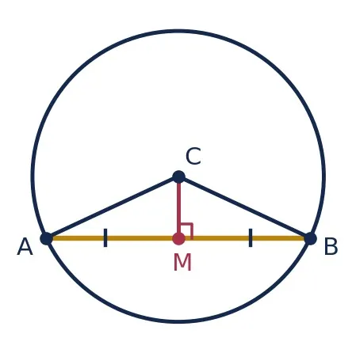
CM ⊥ AB
GivenCM ⊥ AB, C the centre
To findProve AM = BM
Step 1
∠CMA = ∠CMB = 90° (given)
Step 2
CA = CB (radii; these are the hypotenuses)
Step 3
CM = CM (common)
Step 4
△CMA ≅ △CMB (RHS), so AM = BM (CPCT)
AnswerThe perpendicular from the centre bisects the chord. Proved.
2
An isosceles △ABC with AB = AC is inscribed in a circle. Show that the altitude from A to BC passes through the centre.
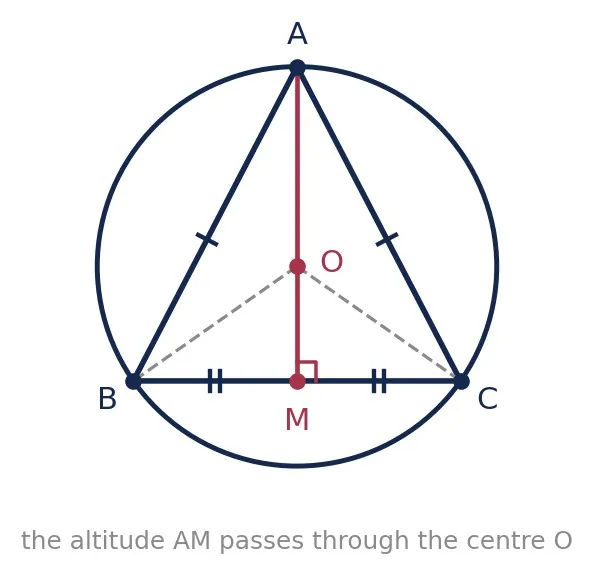
The altitude AM passes through O
Step 1
AB = AC, so A is equidistant from B and C, so A lies on the perpendicular bisector of BC
Step 2
OB = OC (radii), so the centre O also lies on the perpendicular bisector of BC
Step 3
In an isosceles triangle, the altitude from A is the perpendicular bisector of BC
AnswerThe altitude from A passes through the centre O. Proved.
3
Two parallel chords of lengths 6 cm and 8 cm lie on opposite sides of the centre of a circle of radius 5 cm. Find the distance between their midpoints.
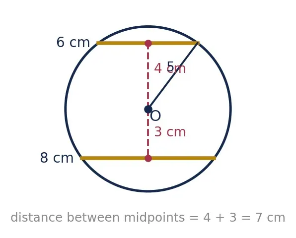
Opposite sides: add the distances
Givenr = 5 cm, chords 6 cm and 8 cm, opposite sides
Formula / ideaDistance from centre d = √(r² − (half chord)²)
Step 1
6 cm chord: half = 3, d₁ = √(25 − 9) = √16 = 4 cm
Step 2
8 cm chord: half = 4, d₂ = √(25 − 16) = √9 = 3 cm
Step 3
Opposite sides of the centre, so add: 4 + 3 = 7 cm
AnswerDistance between midpoints = 7 cm (it would be 1 cm if they were on the same side)
Exercise Set 5.4
3 questions
1
Use the Baudhāyana–Pythagoras theorem to show why Theorem 6 (equal chords are equidistant from the centre) must be true.
Step 1
A chord of length L at distance d from the centre: the perpendicular bisects it, giving a right triangle with legs d and L2 and hypotenuse r
Step 2
d² + (L2)² = r², so d = √(r² − L²4)
Step 3
d depends only on r and L, so equal chords in the same circle have equal d
AnswerEqual chords are equidistant from the centre
2
In Fig. 5.15, CE ⊥ AB, CH ⊥ GF and CE = CH. Show that AB = GF.
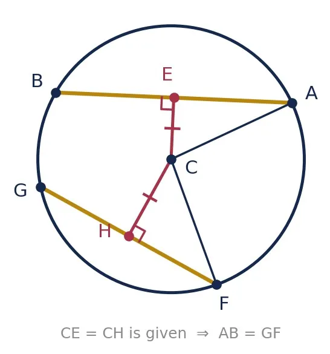
CE = CH
Step 1
∠CEA = ∠CHF = 90° (given)
Step 2
CA = CF (radii, the hypotenuses) and CE = CH (given)
Step 3
△CEA ≅ △CHF (RHS), so AE = FH (CPCT)
Step 4
The perpendicular from the centre bisects a chord: AB = 2AE and GF = 2FH
AnswerAB = GF. Proved.
3
Solve the previous question using the Baudhāyana–Pythagoras theorem.
Step 1
In right △CEA: AE² = CA² − CE². In right △CHF: FH² = CF² − CH²
Step 2
CA = CF (radii) and CE = CH (given), so AE² = FH², AE = FH
Step 3
AB = 2AE = 2FH = GF
AnswerAB = GF. Proved.
Exercise Set 5.5
3 questions
1
The radius of a circle is 7 cm and a chord is 6 cm from the centre. Find the length of the chord.
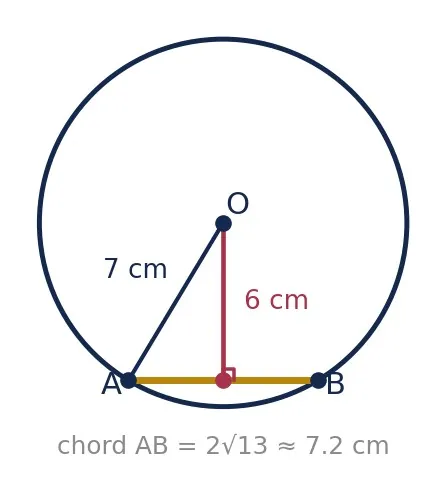
Givenr = 7 cm, d = 6 cm
Formula / ideaChord = 2√(r² − d²)
Step 1
Half chord = √(7² − 6²) = √(49 − 36) = √13
Step 2
Chord = 2√13
AnswerChord = 2√13 ≈ 7.2 cm
2
Explain why the length of a chord at distance d from the centre is 2√(r² − d²).
Step 1
Let OM ⊥ AB with OM = d. By Theorem 5, M is the midpoint of AB, so AM = ½AB
Step 2
△OMA is right-angled at M with hypotenuse OA = r
Step 3
AM² = r² − d², so AM = √(r² − d²)
AnswerAB = 2AM = 2√(r² − d²)
3*
If chord AB is twice as far from the centre as chord CD, can we say CD = 2AB?
Step 1
Chord length involves a square root, so it is not proportional to the distance
Step 2
Counter-example: r = 5 cm, CD at 1.5 cm, AB at 3 cm. CD = 2√(25 − 2.25) ≈ 9.54 cm, AB = 2√(25 − 9) = 8 cm
Step 3
CD ÷ AB ≈ 1.19, not 2
AnswerNo. We can only say CD > AB (the chord nearer the centre is longer)
Exercise Set 5.6
3 questions
1
The central angle ∠AOB = 60° in a circle of radius 12 cm. Find the chord AB.
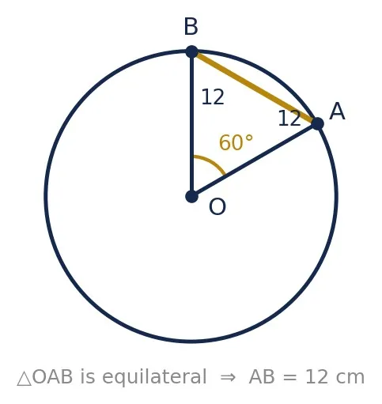
△OAB is equilateral
Step 1
OA = OB = 12 cm (radii), so △OAB is isosceles
Step 2
Base angles = (180° − 60°) ÷ 2 = 60° each, so all angles are 60°: equilateral
AnswerAB = 12 cm
2
A and B are on a circle with centre O. (i) Can ∠AXB and ∠AYB differ if X and Y are on the same side of AB? (ii) Do equal angles mean X and Y are on the same side? (iii) If so, does the circle through A, B, X pass through Y?
(i)
Step 1
X and Y on the same side lie on the same arc; by Theorem 9 they give the same angle
AnswerNo, the angles are equal
(ii)
Step 1
If X and Y were on opposite sides, AXBY would be cyclic and ∠AXB + ∠AYB = 180°, so equal angles would mean both are 90° (AB a diameter)
AnswerYes, except in that special case
(iii)
Step 1
Equal angles on the same side make A, B, X, Y concyclic (Theorem 10), and only one circle passes through A, B, X
AnswerYes, it passes through Y
3
Find x in Fig. 5.26, where the angle at D is 100°.
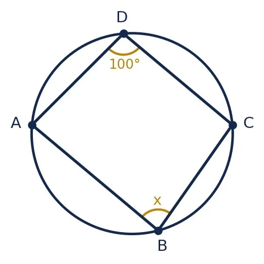
Fig. 5.26
Formula / ideaOpposite angles of a cyclic quadrilateral add up to 180°
Step 1
∠B + ∠D = 180°, so x + 100° = 180°
Answerx = 80°
End-of-Chapter Exercises
26 questions
Questions marked * are the harder ones.
1
A chord is 5 cm from the centre of a circle of radius 13 cm. Find the length of the chord.
A regular hexagon is inscribed in a circle of radius r. Find its side and the distance of each side from the centre.
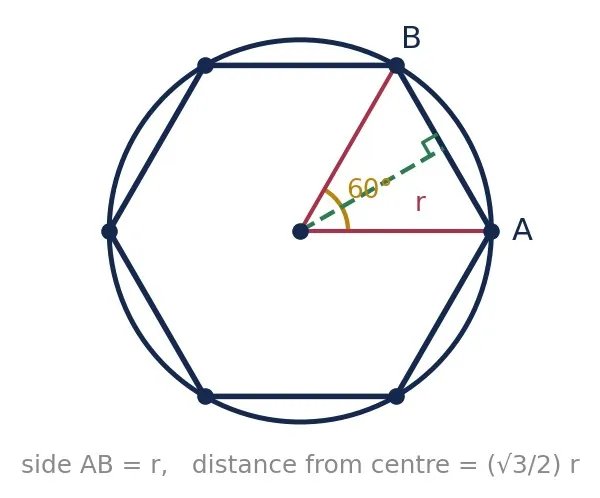
Step 1
∠AOB = 360° ÷ 6 = 60°, and OA = OB = r, so △OAB is equilateral: AB = r
Step 2
Distance = √(r² − (r2)²) = √(3r²4) = √32 r
AnswerSide = r; distance from centre = (√3/2) r ≈ 0.87 r
20
Quadrilateral MNOP is inscribed in a circle with MN a diameter. What can you say about ∠MOP and ∠MNP?
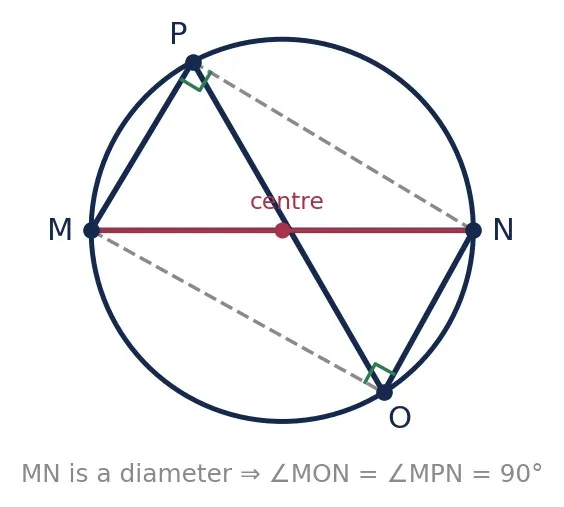
Step 1
Both angles stand on chord MP, and O and N are on the same arc, so they are angles in the same segment
Step 2
Also MN is a diameter, so ∠MON = ∠MPN = 90°
Answer∠MOP = ∠MNP (and ∠MON = ∠MPN = 90°)
21
Show that an exterior angle of a cyclic quadrilateral equals the interior opposite angle.
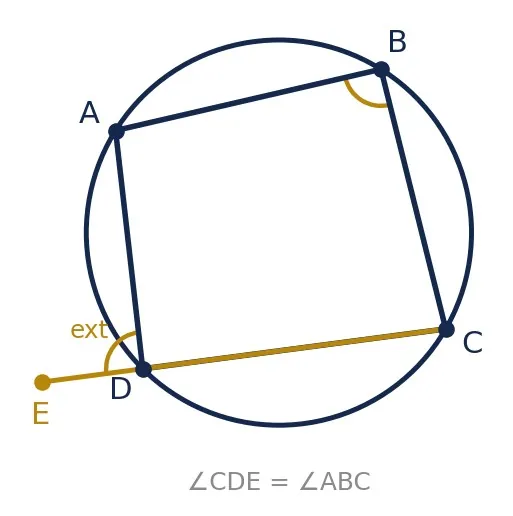
GivenABCD cyclic, CD produced to E
Step 1
∠CDE + ∠ADC = 180° (linear pair)
Step 2
∠ABC + ∠ADC = 180° (opposite angles of cyclic quadrilateral)
Step 3
So ∠CDE + ∠ADC = ∠ABC + ∠ADC
Answer∠CDE = ∠ABC. Proved.
22*
Justify: “No chord of a circle is longer than its diameter.”
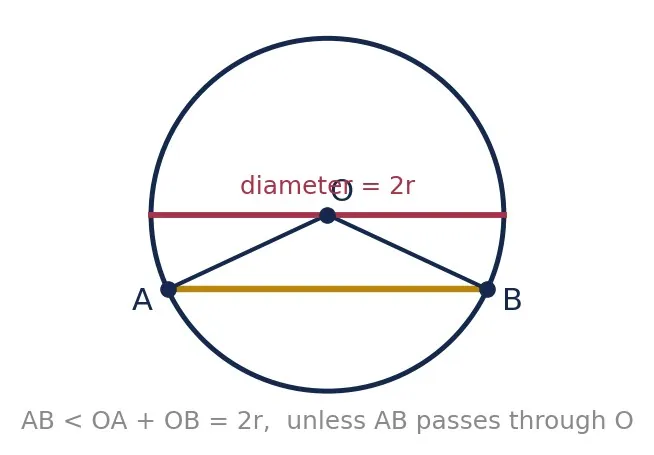
Step 1
A chord at distance d has length 2√(r² − d²) ≤ 2√(r²) = 2r, since d² ≥ 0
Step 2
Or: for chord AB, join OA, OB. If O is not on AB, AB < OA + OB = 2r (triangle inequality)
AnswerEvery chord ≤ 2r, with equality only for a diameter
23*
A is a point inside a circle with centre O. Show that the shortest chord through A is perpendicular to OA.
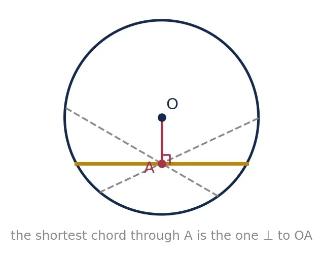
Step 1
A chord through A at distance d from O has length 2√(r² − d²), smallest when d is largest
Step 2
If M is the foot of the perpendicular from O, then OM ≤ OA (OA is the hypotenuse of △OMA)
Step 3
So d is largest (d = OA) when M = A, that is when the chord ⊥ OA
AnswerShortest chord ⊥ OA, length 2√(r² − OA²)
24
Use Fig. 5.30 to justify that the angle in a semicircle is 90°.
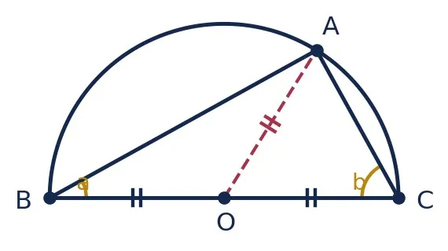
Fig. 5.30
GivenBC a diameter, O the centre, A on the circle; join OA
Step 1
OA = OB, so ∠OAB = ∠OBA = a
Step 2
OA = OC, so ∠OAC = ∠OCA = b
Step 3
In △ABC: (a + b) + a + b = 180°
Step 4
2(a + b) = 180° ⟹ a + b = 90°
Answer∠BAC = a + b = 90°. Proved.
25*
Chords CC′ and DD′ are perpendicular to a diameter AB. Prove that MM′ (joining the midpoints of CD and C′D′) is perpendicular to AB.
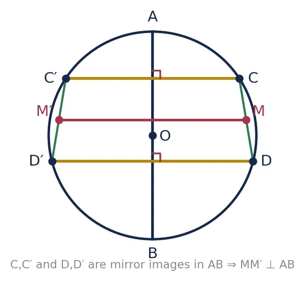
Step 1
AB passes through O and CC′ ⊥ AB, so AB bisects CC′ at right angles: C and C′ are mirror images in AB
Step 2
In the same way D and D′ are mirror images in AB
Step 3
Reflection keeps midpoints, so M′ is the mirror image of M
Step 4
The segment joining a point to its mirror image is perpendicular to the mirror line
AnswerMM′ ⊥ AB. Proved.
26*
Use Fig. 5.31 to justify that the opposite angles of a cyclic quadrilateral add up to 180°.
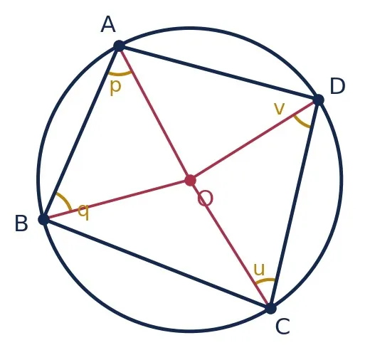
Fig. 5.31
Step 1
Join O to A, B, C, D: four isosceles triangles (two sides are radii)
Step 2
Base angles: p in △OAB, q in △OBC, u in △OCD, v in △ODA
Step 3
∠A = p + v, ∠B = p + q, ∠C = q + u, ∠D = u + v
Step 4
Sum = 2(p + q + u + v) = 360° ⟹ p + q + u + v = 180°
Step 5
∠A + ∠C = p + q + u + v = 180° and ∠B + ∠D = 180°
AnswerOpposite angles are supplementary. Proved.
Made by MT Classes, S.K. Nagar, Motihari for Class 9 CBSE students. Questions are from the NCERT Ganita Manjari textbook; solutions are written by MT Classes. Back to the chapter notes · All notes